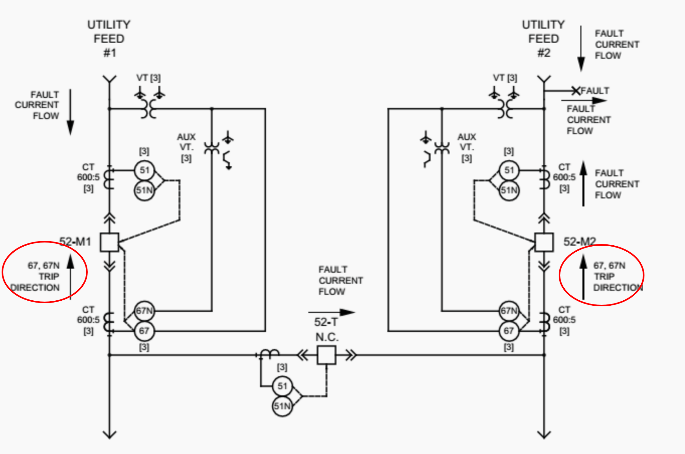

Directional overcurrent relay adalah relay yang dapat mendeteksi gangguan arus lebih (overcurrent) dan dapat diatur untuk
hanya beroperasi jika gangguan datang dari arah tertentu
Prinsip Kerja

Pada gambar, bustie normally close menghubungkan 2 jalur utama (feed 1 dan feed 2)
Breaker masing-masing feed terhubung dengan relay 51 dan 67
Relay 51 hanya terhubung CT, sedangkan relay 67 terhubung CT dan PT
Relay 67 akan trip jika arus dalam jumlah besar mengalir sesuai arah trip direction (lingkaran merah)
Asumsikan terjadi fault pada feed 2
Tanpa relay directional
Arus gangguan mengalir dari feed 1 dan dari sumber feed 2 menuju titik fault
Jika tidak ada relat directional, walaupun breaker dari sisi sumber feed 2 (sebelum titik fault) open, arus dari feed 1 menuju titik fault akan terus mengalir
Bustie memiliki relay 51, jika gangguan tidak cepat diisolasi, maka akan trip karena dialiri arus gangguan
Jika bustie trip, maka beban feed 2 akan OFF
Dengan relay directional
Arus gangguan mengalir dari feed 1 dan dari sumber feed 2 menuju titik fault
Untuk memisahkan feed 1 dengan titik gangguan tanpa open bustie, digunakan relay directional
Relay ini akan membaca arah aliran arus, dan open jika ada arus dalam jumlah besar yang mengalir menuju sumber
Relay 52-M2 (feed 2) akan trip karena arah aliran arus dari feed 1 menuju titik gangguan sesuai dengan trip direction relay 67
Relay 52-M1 (feed 1) tidak trip karena arah aliran arus berlawanan dengan trip direction
Karena 52-M2 trip, feed 1 tidak lagi terhubung titik fault dan tidak ada arus gangguan yang mengalir melalui bustie. Bustie tidak trip,
beban Feed 2 dapat disuplai oleh feed 1